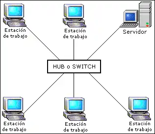
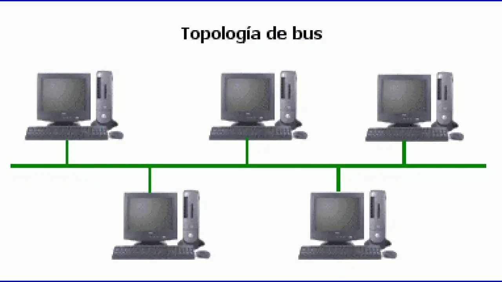
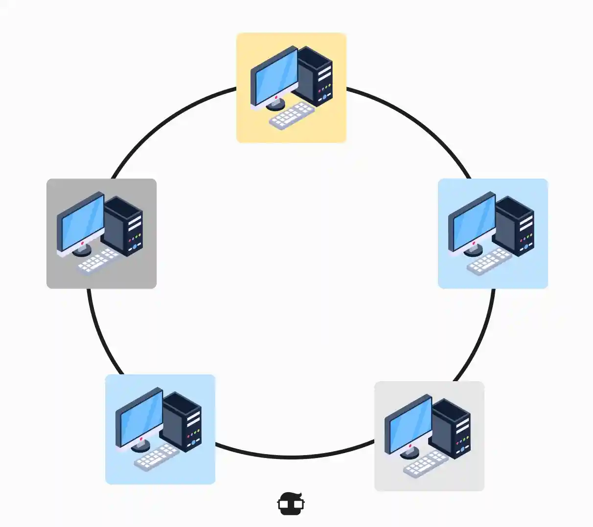
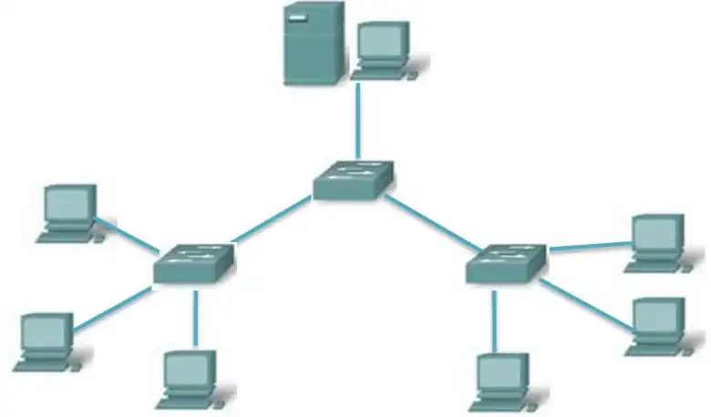
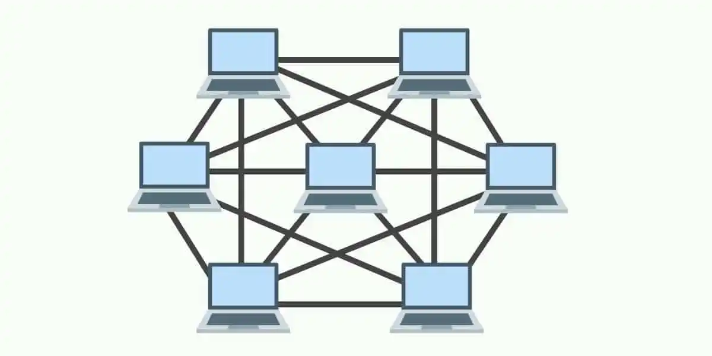
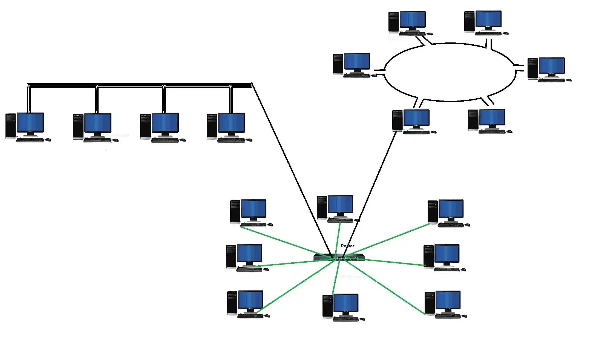

16. Introducción a las Redes
Índice
- ¿Qué es una Red?
- Ventajas de las Redes
- Preguntas Clave Antes de Crear una Red
- Administración de Red
- Tipos de Tecnología de Red
- Modelos de Conexión
- Topologías de Red
- ¿Qué Topología es Mejor?
- Mapeo de la Topología
- Importancia de la Topología de Red
- Componentes de la Capa Física
- Componentes de Red para Redes Locales
¿Qué es una Red?
Una red es una conexión entre al menos dos dispositivos informáticos. Esta conexión puede tener diferentes estructuras (cableado o inalámbrico) y cubrir diferentes rangos.
El objetivo es permitir el intercambio de datos, comunicación y uso compartido de recursos como:
- Espacio de almacenamiento
- Programas o aplicaciones
- Datos
Se accede a estos recursos a través de un sistema operativo compatible con la red. Detrás de cada interacción digital hay una red: desde leer este documento, editar un documento con colegas, hasta conectar tu teléfono a dispositivos Bluetooth.
Ventajas de las Redes
| Ventaja | Descripción |
|---|---|
| Acceso compartido a los datos | Todos los usuarios autorizados trabajan con la misma información actualizada |
| Uso compartido de dispositivos y software | No es necesario duplicar impresoras, almacenamiento ni programas |
| Mayor rendimiento | La potencia informática y el almacenamiento se utilizan de forma flexible y ampliada |
| Gestión centralizada | Los programas, datos y configuraciones se controlan desde una única ubicación |
| Derechos de acceso claros | Cada usuario recibe exactamente los permisos que necesita |
| Mayor seguridad de los datos | Las normas de protección, copia de seguridad y seguridad se implementan de forma centralizada |
| Fácil expandibilidad | Se pueden integrar fácilmente nuevos dispositivos o usuarios en la red |
Preguntas Clave Antes de Crear una Red
Antes de profundizar en la tecnología de redes, debes responder:
- ¿Qué requisitos tengo para la red?
- ¿Lo necesito localmente o con mayor alcance?
- ¿A cuántos participantes me dirijo y qué utilización de la capacidad implica esto?
- ¿La red debe ser privada, pública o ambas?
- ¿Qué tan alta debe ser la seguridad de la red?
- ¿Qué hardware necesito?
- ¿Puedo configurar la red yo mismo o necesito un experto?
Nota: Una infraestructura de red estable constituye la base para sistemas de TI confiables en las empresas. Debe diseñarse para adaptarse fácilmente a futuras expansiones.
Administración de Red
La administración de red es esencial para la seguridad y el funcionamiento ininterrumpido. Incluye tareas como:
- Monitoreo continuo del estado de la red
- Actualizaciones de software y firmware
- Gestión de usuarios y permisos
- Mantenimiento preventivo
Las modernas herramientas de gestión de redes facilitan la monitorización y el control de estructuras de TI complejas.
Tipos de Tecnología de Red
Las redes varían enormemente en escala: una conexión en un hogar privado de dos personas es completamente diferente de una red que conecta a miles de empleados en distintos países.
Redes de Área Local (LAN)
| Tipo | Ventaja | Uso |
|---|---|---|
| PAN (Personal Area Network) | Configuración muy rápida; energéticamente eficiente | Relojes inteligentes, rastreadores de actividad, auriculares inalámbricos, conexiones para smartphones |
| LAN/WLAN (Local/Wireless LAN) | Transferencia rápida de datos dentro de un edificio; fácil conexión en red de empleados | Redes de oficinas, redes domésticas, pequeñas empresas |
Nota: Al configurar LAN y WLAN, es importante utilizar los enrutadores y conmutadores adecuados.
Redes de Área Extendida
| Tipo | Ventaja | Uso |
|---|---|---|
| CAN (Campus Area Network) | Red segura para múltiples edificios en un campus | Universidades, instituciones de investigación, campus corporativos |
| MAN (Metropolitan Area Network) | Redes a nivel de ciudad, de largo alcance | Wi-Fi urbano, sistemas de gestión del tráfico, autoridades municipales |
| WAN (Wide Area Network) | Redes mundiales y almacenamiento centralizado de datos | Grandes empresas, sucursales internacionales, acceso a la nube |
| GAN (Global Area Network) | Acceso a recursos globales y alcance universal | Internet (World Wide Web), redes de comunicación globales |
Redes Privadas Virtuales (VPN)
Las VPN ocultan tanto la dirección IP como la ubicación. Pueden asignarse a uno de los tipos de red mencionados y, por tanto, pueden verse como un tipo de complemento.
Nota: Las redes LAN y WAN suelen estar conectadas. Existen tecnologías y protocolos que se utilizan en ambas, por lo que no siempre es posible una separación clara.
Modelos de Conexión
Red Peer-to-Peer (P2P)
Aquí hay ordenadores con iguales derechos, cada uno de los cuales puede ser a la vez servidor y cliente. No existe una jerarquía central.
Red Cliente-Servidor
Una computadora de servicio adicional (a menudo un servidor de red) forma el centro de control desde el cual todos los dispositivos conectados recuperan los datos. Ideal para empresas de todos los tamaños.
Topologías de Red
La topología de red es cómo se organizan los elementos de una red de comunicaciones. La estructura topológica se puede representar de forma física o lógica:
- Topología lógica: Los dispositivos de comunicación se modelan como nodos y las conexiones entre dispositivos se modelan como enlaces o líneas entre nodos.
- Topología física: Describe la verdadera apariencia o diseño de la red. Las distancias entre nodos, interconexiones físicas, velocidades de transmisión o tipos de señales pueden diferir.
Tipos de Topologías
Topología en Estrella

La red está organizada de modo que los nodos estén conectados a un dispositivo central (HUB), que actúa como servidor. El HUB gestiona la transmisión de datos a través de la red. Cualquier dato enviado viaja a través del dispositivo central antes de llegar a su destino.
Ventajas:
- ✅ Gestión conveniente desde una ubicación central
- ✅ Si un nodo falla, la red aún funciona
- ✅ Los dispositivos se pueden agregar o quitar sin interrumpir la red
- ✅ Más fácil de identificar y aislar los problemas de rendimiento
Desventajas:
- ❌ Si el dispositivo central falla, toda la red dejará de funcionar
- ❌ El rendimiento y el ancho de banda están limitados por el nodo central
- ❌ Puede ser costoso de operar
Topología en Bus

También llamada topología de red troncal, bus o línea. Guía los dispositivos a lo largo de un single cable que se extiende desde un extremo de la red hasta el otro. Los datos fluirán a lo largo del cable a medida que viajan a su destino.
Ventajas:
- ✅ Económico para redes más pequeñas
- ✅ Diseño simple; todos los dispositivos conectados a través de un cable
- ✅ Se pueden agregar más nodos alargando la línea
Desventajas:
- ❌ La red es vulnerable a fallas de cables
- ❌ Cada nodo agregado disminuye la velocidad de transmisión
- ❌ Los datos solo se pueden enviar en una dirección a la vez
Topología en Anillo

Los nodos se configuran en un patrón circular. Los datos viajan a través de cada dispositivo a medida que atraviesan el anillo. En redes grandes, pueden necesitarse repetidores para evitar la pérdida de paquetes.
Las topologías de anillo pueden configurarse como:
- Anillo simple (half-dúplex): Tráfico en una sola dirección
- Anillo doble (full-dúplex): Tráfico en ambas direcciones simultáneamente
Ventajas:
- ✅ Costo efectivo
- ✅ Barato de instalar
- ✅ Problemas de rendimiento fáciles de identificar
Desventajas:
- ❌ Si un nodo cae, puede afectar varios nodos con él
- ❌ Todos los dispositivos comparten ancho de banda, limitando el rendimiento
- ❌ Agregar o eliminar nodos significa tiempo de inactividad para toda la red
Topología en Árbol

Un nodo central conecta los hubs secundarios. Estos hubs tienen una relación de padres-hijos con los dispositivos. El eje central es como el tronco del árbol, y las ramas son los concentradores secundarios o nodos de control.
Ventajas:
- ✅ Extremadamente flexible y escalable
- ✅ Facilidad para identificar errores (cada branch puede diagnosticarse individualmente)
Desventajas:
- ❌ Si falla un hub central, los nodos se desconectarán (aunque las ramas pueden funcionar independientemente)
- ❌ La estructura puede ser difícil de gestionar de forma eficaz
- ❌ Utiliza mucho más cableado que otros métodos
Topología de Malla (Mesh)

Los nodos están interconectados.
- Full-mesh: Conecta todos los dispositivos directamente entre sí
- Partial-mesh: La mayoría de los dispositivos se conectan directamente, proporcionando múltiples rutas para la entrega de datos
Los datos se envían por la distancia más corta disponible.
Ventajas:
- ✅ Confiable y estable
- ✅ Ningún fallo de un solo nodo desconecta la red
Desventajas:
- ❌ Grado complejo de interconectividad entre nodos
- ❌ Mano de obra intensiva para instalar
- ❌ Utiliza mucho cableado para conectar todos los dispositivos
Topología Híbrida

Utiliza varias estructuras de topología. Es más común en organizaciones grandes donde cada departamento puede tener un tipo de topología diferente (estrella o línea), conectándose a un hub central.
Ventajas:
- ✅ Flexibilidad
- ✅ Puede personalizarse según las necesidades del cliente
Desventajas:
- ❌ La complejidad aumenta
- ❌ Se requiere experiencia en múltiples topologías
- ❌ Puede ser más difícil determinar los problemas de rendimiento
¿Qué Topología es Mejor?
No existe una respuesta correcta o incorrecta. La elección dependerá de:
- Nivel de comodidad y cantidad de redundancia necesaria
- Presupuesto: Cuantos más cables y más compleja la topología, más costosa
- Necesidades comerciales que cambian y evolucionan
muchas organizaciones eligen topologías en estrella porque es fácil realizar cambios sin interrupciones significativas.
Mapeo de la Topología
La gestión eficaz de la topología requiere un mapeo visual. Se necesita un mapa de red preciso que incluya:
- Dispositivos
- Interconexiones
- Posibles cuellos de botella
A medida que las redes se vuelven más complejas, los mapas de topología se convierten en la columna vertebral de la continuidad empresarial. Existen herramientas de descubrimiento y mapeo que pueden generar automáticamente topologías de capa 2 y 3.
Importancia de la Topología de Red
La topología desempeña un papel crucial en la funcionalidad y eficiencia de la red.
Impacto en el Rendimiento
La elección de topología afecta significativamente las velocidades de transferencia, el ancho de banda y la latencia:
- Estrella: Transmisión más rápida para redes con pocos nodos
- Malla: Mejor rendimiento para redes grandes y complejas
Fiabilidad y Tolerancia a Fallos
| Topología | Redundancia |
|---|---|
| Malla | Alta (múltiples rutas de datos) |
| Bus/Estrella | Vulnerable a puntos únicos de fallo |
Escalabilidad
- Estrella y Árbol: Adición más sencilla de nuevos nodos
- Malla y Estrella: Más adecuadas para grandes volúmenes de tráfico
Consideraciones de Coste
- Bus: Costes iniciales más bajos
- Malla: Requiere más cableado y equipo
Debe considerarse el TCO (Total Cost of Ownership): inversión inicial, gastos operativos y costes del tiempo de inactividad.
Implicaciones de Seguridad
- Centralizadas (estrella): Aplicación más sencilla de protocolos de seguridad y control de acceso
- Descentralizadas (mesh): Beneficios de seguridad inherentes gracias a la diversidad de rutas
Los firewalls se utilizan a menudo para proteger contra amenazas externas. Una topología segura ayuda a cumplir normativas como RGPD e HIPAA.
Facilidad de Gestión
- Estrella: Problemas suelen aislarse en nodos específicos o en el hub central
- Anillo: Puede requerir más esfuerzo para localizar y resolver problemas
Componentes de la Capa Física
Elementos Clave
| Componente | Descripción |
|---|---|
| Nodos | Dispositivos como computadoras, servidores, impresoras, enrutadores y conmutadores |
| Enlaces | Conexiones físicas o inalámbricas entre nodos |
| NIC (Tarjeta de Interfaz de Red) | Hardware que permite conectar un dispositivo a la red |
| Conmutadores (Switches) | Conectan múltiples nodos en una LAN y facilitan el reenvío de datos |
| Enrutadores (Routers) | Conectan múltiples redes y permiten el enrutamiento entre ellas |
| Cables y medios de transmisión | Medio físico para transportar señales (cables de par trenzado, fibra óptica) |
| Protocolos | Reglas y convenciones que rigen la transmisión de datos |
Componentes de Red para Redes Locales
Para crear una red, se deben conectar al menos dos computadoras u otros dispositivos finales. Los datos pueden transmitirse a través de:
- Cobre (cableado tradicional)
- Fibra óptica
- WLAN/WiFi
- Combinación de estos
Dispositivos de Red
| Dispositivo | Función |
|---|---|
| HUB | Reúnen dispositivos en una LAN. No diferencian participantes individuales. Siempre envía paquetes a todos los usuarios. |
| Switch | Identifica participantes por su dirección MAC. Solo envía datos al destinatario deseado. |
| Router | Lee y asigna direcciones IP. Permite comunicación fuera de la LAN y uso de Internet. |
| Switch de Capa 3 | Combinación de router y switch. Útil en redes grandes por su mayor velocidad. |
Fuente: The Network Monitor, CCNadesdecero.es